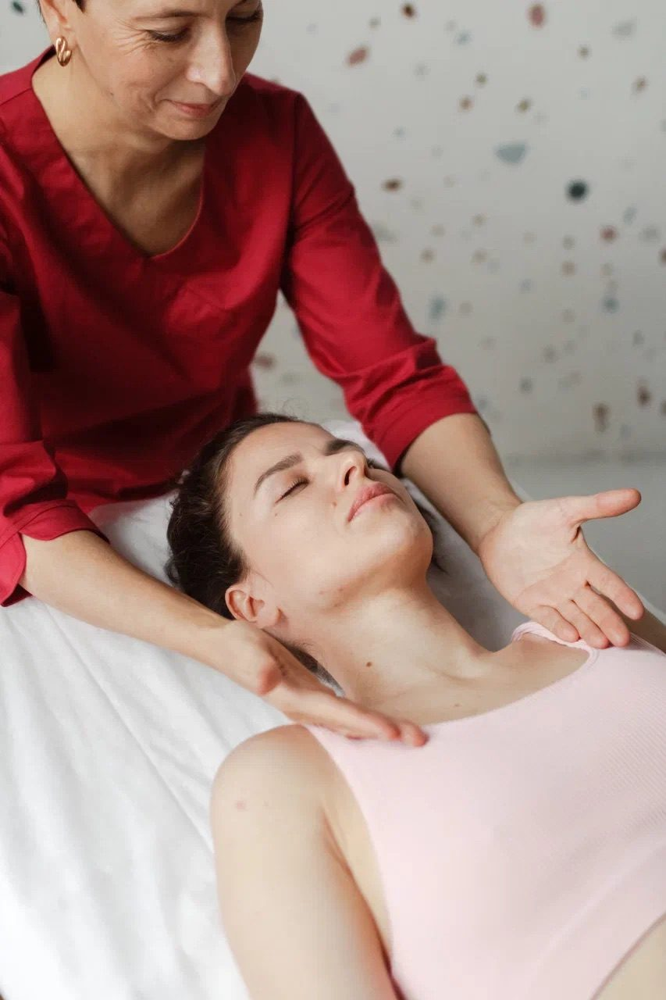

Я не оставляю попыток объяснить людям, что такое биодинамика и почему этот метод имеет огромную важность для вашего здоровья.

Представьте, что внутри вас есть врождённая карта идеального здоровья, та самая, по которой вы развивались в утробе матери. Она не исчезает после рождения, а продолжает работать, направляя процессы восстановления и баланса.
Именно с этим мудрым планом взаимодействует биодинамика, метод, который помогает телу вспомнить, как исцелять себя.
Эмбриолог Эрих Блехшмидт, изучая ранние стадии развития человека, обнаружил поразительное: зародыш с математической точностью следует плану идеальной геометрии. Он никогда не ошибается в углах, объёмах и направлениях роста.
Эти силы, которые создали нас из микроскопической клетки, остаются в организме и после рождения. Они регулируют движение жидкостей, обновление тканей и адаптацию к стрессам.
Когда тело забывает о своей изначальной программе, появляются хронические болезни, боли, усталость и последствия травм. Часто это следствие сбоев в саморегуляции.
Биодинамика не лечит симптомы. Она работает с теми самыми силами, которые управляли вашим развитием в эмбриональный период.
Как терапевт, я не вмешиваюсь в процессы организма, а создаю условия, чтобы ваше тело само включило механизмы восстановления. Через мягкий телесный контакт и наблюдение за ритмами тканей и жидкостей я помогаю настроить систему на изначальный порядок.
Тело получает доступ к своей базовой программе здоровья и к собственному плану лечения.